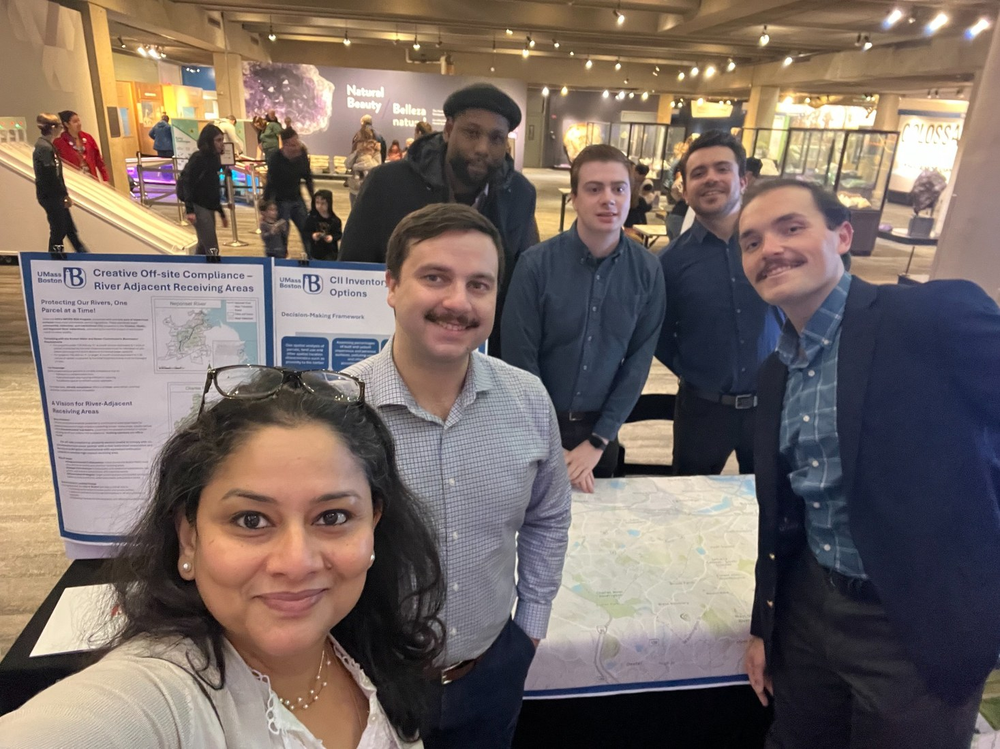

2023-2024
2023-2024Boston Pipeline Initiative
Evaluation and implementation planning for a pathway program introducing youth of color to planning and community development.
Planning studios
Studio projects give students experience translating research into public-facing analysis, reports, maps, presentations, and implementation strategies.
2023-2024Evaluation and implementation planning for a pathway program introducing youth of color to planning and community development.

2024-2025Applied work supporting implementation of Residual Designation Authority stormwater regulation in Boston.
 2025-2026
2025-2026Community-engaged research on older adults in flood-prone subsidized housing in coastal Massachusetts.